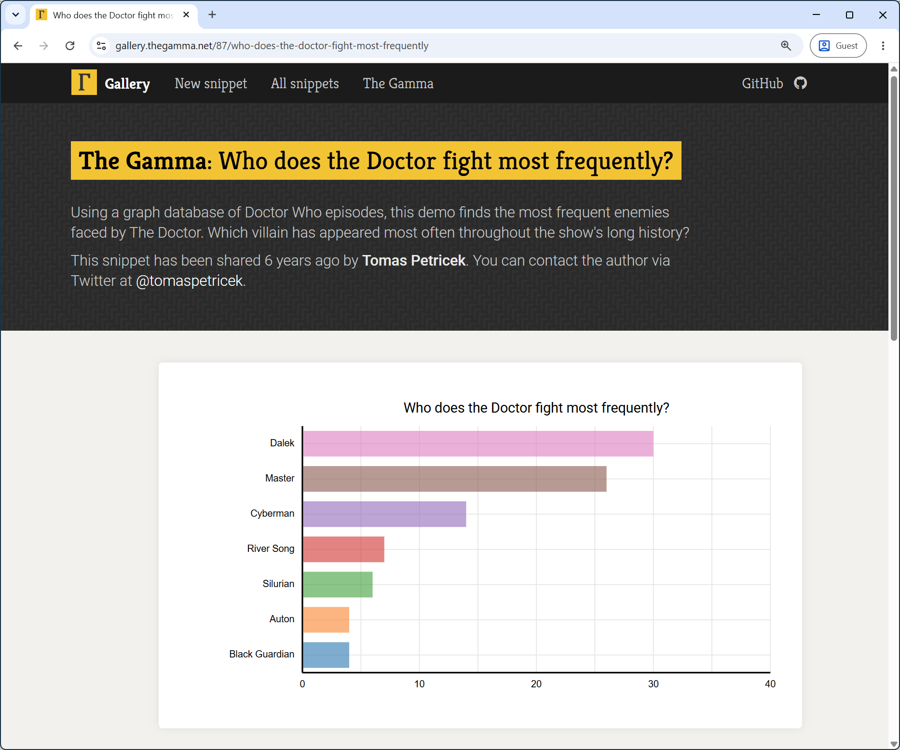
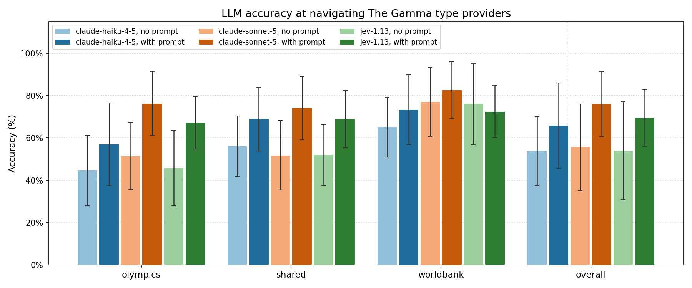
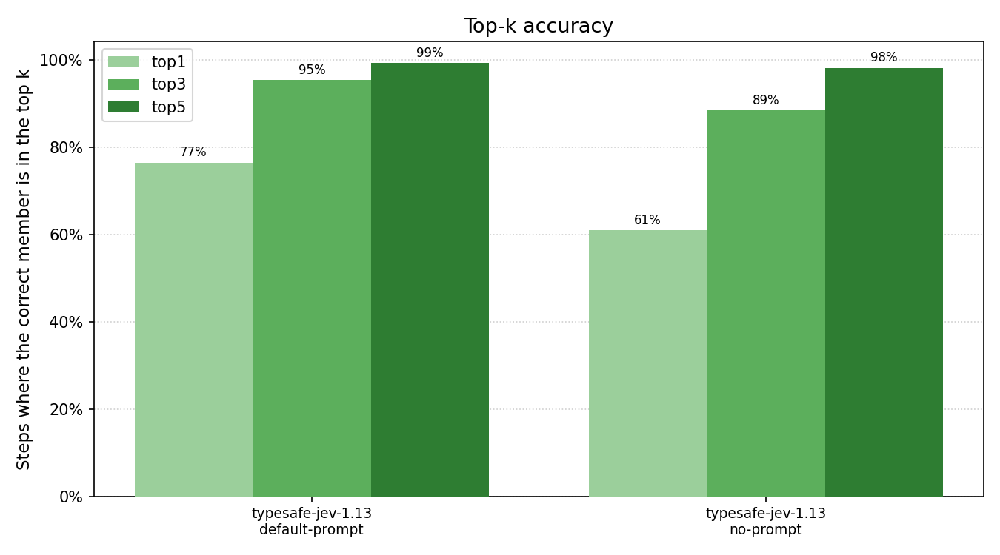

Completing Programming Adventures with Jev
This blog has not exactly been chasing the latest trends, but I'm going to make an exception, because of two events that have aligned just in the right way. I will be going to SPLASH to present a paper The Choose-Your-Own-Adventure Calculus based on an earlier blog post (and also an OOPSLA paper about Timeline, our spreadsheet with time).
The calculus formalizes a mode of interaction between a user and a programming system where the programming system repeatedly offers a range of choices to the user and the user constructs a program by choosing one. The model is inspired by F# type providers, but it works for many other use cases, such as interactive theorem proving, structure editing or data wrangling.
One experiment we did in the paper was to see if an LLM can make the choices for you. You write what you want to do and the LLM then recommends options for you to pick, so you can review what code you get and learn what the system offers. Although we do this only for small code snippets, I think this is potentially an interesting mode of interacting with an AI. To do the experiment, we prompt an LLM along the lines of "The user wants to do this. They selected these options before. Now they have these options. Which one should they pick?"
Now the reason for this blog post is that TypeSafe AI just introduced their "System One Model" called Jev, which is an AI to do exactly the kind of work that our choose-your-own-adventure calculus models.
Background: Choose-your-own-adventure systems
The LLM experiment in the Choose-Your-Own-Adventure paper uses type providers for completing various data exploration tasks that I built for The Gamma. The project also has a gallery of snippets where people can post their snippets with a brief description.

Figure 1. Sample snippet from The Gamma gallery
The example in the screenshot combines a type provider for querying the Dr Who graph database and a type provider for aggregating the results (you can read more about this in a paper about The Gamma). The snippet description says:
Using a graph database of Doctor Who episodes, this demo finds the most frequent enemies faced by The Doctor. Which villain has appeared most often throughout the show's long history?
The code that fetches and aggregates the data looks like this:
1: 2: 3: 4: 5: 6: 7: |
|
The programming model behind (the most of) The Gamma is that you start with a data source
(here drWho) and then type dot (.). The type provider generates available options.
For graph database, this is possible type of nodes. You can then select a sequence of nodes
(Doctor) and relationships (ENEMY_OF) with a placeholder [any]. This queries the
database and gets us all the enemies of The Doctor and the episodes they appeared in.
The explore_properties member switches to a type provider for aggregating data and we
then use SQL-like operations to group the data by the enemy name (1-name) and count
the distinct episodes (2-name).
Programming by choosing options
The key idea is that you can do all this programming just by choosing one of the offered options. The type providers generate the options behind the scenes, based on the actual data. The model has various nice properties, discussed in the paper. It is complete and correct, meaning that you can construct all possible programs, and everything you can construct is a correct (albeit not always useful) program.
This also means that normal LLMs are not great for generating The Gamma code. Many of the members have domain-specific (and not always nice) names. You'd need to expose the type provider as some kind of tool, or you need to do what we did in our experiment - prompt an LLM repeatedly to tell you which option to pick.
However, the System One model implemented by Jev does exactly what we need. The Choice question type that it offers lets you ask a question and give a list of possible answers. Jev returns probabilities for the individual answers and so, if we want to control The Gamma (or other programming system that fits with the choose-your-own-adventure calculus model), we can pick the most likely answer, or display the options to the user ranked by their probability.
Experiment: How well can AI use The Gamma?
We want to see how good different models are at choosing members offered by The Gamma, when given a natural language description of the task. I'll compare two models from Anthropic (Haiku 4.5 and Sonnet 5) and the new model from TypeSafe (Jev 1.13). The questions are:
- RQ 1: How often can a model choose the right member?
- RQ 2: What is the cost of using different models?
- RQ 3: Can we do more with the probabilities from Jev?
Experimental setup
I extracted 75 member chains from the snippets shared at The Gamma gallery. Most snippets contain just one, but there are a few where there are multiple chains (e.g., comparing carbon emissions for two countries). For the prompt, I use the title and the description of the snippet (which was never intended as an AI prompt).
For each chain, we'll construct a series of prompts, asking the AI to choose the next member. For LLMs, the prompt looks something like this:
Goal: Who does the Doctor fight most frequently?
Description: Using a graph database of Doctor Who episodes, this demo finds the most frequent enemies of The Doctor. Which villain has appeared most often throughout the show's history?
Steps chosen so far: drWho, Character
Choose the next step from these options: 1. Doctor, 2. Rose Tyler, 3. River Song, 4. Susan Foreman, 5. Romana, 6. Barbara Wright, 7. Ian Chesterton, 8. Vicki, ...
Reply with just the number of the best option.
For Jev, we give the options directly through the API and do not need to convince it to return a number we can parse. However, Jev only accepts 255 options, so if there are more than that, we take only 255 making sure to include the correct one. We then run the prompt for each step of the chain, that is total 665 calls (an average length of a chain is 8.9).
In the first experiment, I thought that the AI models made some obvious mistakes that would not be necessary if they knew something about how the underlying type providers work, so I added a system prompt that explains the basic structure. This is post-hoc addition, so it may be biased, but the information in the prompt are not specific to any of the snippets.
Results: Accuracy, costs and more
If you want to experiment on your own, you can find all the snippets, prompts and collected results in the project's GitHub repo (running the experiments also requires running The Gamma locally). The analysis of the results is in two notebooks, the first one looking at accuracy and costs and the second one looking at probabilities returned by Jev. Unlike this post, the notebooks and the experimental code were generated by AI, so use it at your own risk!
RQ 1 - Overall accuracy
First of all, how do the different models perform? I grouped the results by the different type provider involved. Most of the snippets use either the World Bank data (navigating a data cube), the Olympics data or the user-provided CSV file (aggregating a table). I only have few snippets for the graph database, so this is not included (sorry, Doctor!)
{kind=link}

Figure 2. Accuracy of different models in The Gamma experiment
Without system prompt, all three models get the top choice right in about 54% of cases. This clearly cannot be used for automation, but it can sometimes give useful hint. With a system prompt, we get better results with 65% for Haiku, 69% for Jev, and 76% for Sonnet. I suspect TypeSafe AI will be happy to see that Jev performs better than low-cost Anthropic models and is getting close to the expensive ones.
RQ 2 - Cost of different models
Let's now look at the costs. One of the selling points of Jev is that it is much cheaper than using an LLM for the same purpose. I can confirm this. In the experiment, we count the input and output tokens (this is reported by the API) and calculate the total costs by using the current official pricing.
{kind=link}
{kind=link}
Jev is certainly much cheaper than a standard LLM for the kind of tasks that the choose-your-own-adventure calculus models. It is maybe not 444x cheaper as in the cases TypeSafe reports in their announcements, but still. Without system prompt, where the accuracy is the same as Haiku/Sonnet, it is 35x cheaper and comparing Jev and Sonnet with system prompts, Jev is 50x cheaper. If you want to use AI to recommend the choices for your choose-your-own-adventure programming system, Jev is definitely the way to go.
RQ 3 - What else can Jev do
So far, I ignored one interesting aspect of the Jev model, which is that it does not just give us one recommendation, but it assigns probabilities to all of the options. This means that a system like The Gamma can use it to sort the options that it displays to the user (instead of just highlighting one). This is much better use of the model and is consistent with my motivation of assisting the user, rather than doing the work for them.
To see how well this way of integrating the AI into a system would work, we can look at the top-k accuracy. This tells us how often is the correct option among the top \(k\) options recommended by Jev. The following shows the results for 1, 3 and 5.
{kind=link}

Figure 4. How often is the correct choice among top k?
It turns out that the probabilities returned by Jev are quite useful! If we only displayed 5 options to the user, then the correct one would be there 99% of the time. There are more that could be done with the probabilities that I did not look into here. For example, we could use the probability to decide whether we want to automatically accept a choice (not asking the user if the AI can choose with a high probability of correctness).
Conclusions
The "System One Model" aka Jev fits extremely well with my idea of choose-your-own-adventure programming system. What we describe is a formal model of programming systems where the user programs by repeatedly choosing one of the options offered by the system. What Jev does is that it can automatically rank those options, if you tell it what you are trying to do.
The motivation behind the paper is that this is an interaction model with many nice properties. Your programs can be correct by construction, you can oversee what is going on, and the paradigm fits with techniques like programming-by-demonstration. It also covers a lot of useful areas ranging from data access and data cleaning, to program synthesis, interactive theorem proving and structure editing.
What we do in the paper is that we capture the model formally, but then also discuss a number of properties that a system based on the model may or may not have. This is a useful design guideline for programming systems, but—because Jev is basically designed to interact with choose-your-own-adventure systems—our formal properties are also a useful design guidelines if you want to build something with the new "System One Models".
Published: Monday, 21 September 2026, 1:33 am
Author: Tomas Petricek
Typos: Send me a pull request!
Tags: research, academic, programming languages, thegamma, type providers